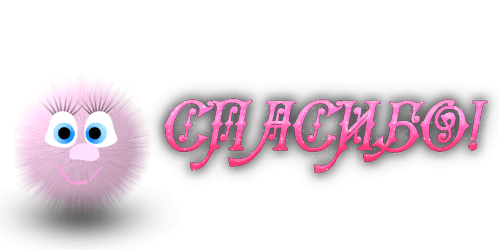

БИОГРАФИЯ
Казалось бы не самая важная информация для резюме, но я считаю место, в котором человек рос-определяет его человеческие качества. Итак, я родилась в многодетной семье, поэтому командная работа для меня никогда не была проблемой, к тому же такие семьи имеют особый подход к обязанностям, которые закрепляются за своими исполнителями, отсюда и родилась исполнительность и обязательность,но я всегда рада прийти на помощь, даже если это не входит в обязанности.
Я закончила медицинский колледж с красным дипломом, и пошла работать в стоматологию, где тоже весьма преуспела,ведь много нюансов были мною изучены, буквально за 3 года. Однако, моё сердце позвало меня в мир IT, где я планирую также быстро научиться всем нюансам и особенностям языков, чтобы стать по настоящему профессионалом своего дела.
👉Если хотите узнать немного больше обо мне👈КОНТАКТЫВконтакте WhatsApp Telegram |
 |
МОИ НАВЫКИ
| JavaScript | HTML | CSS | Node.js | Адаптивная вёрстка |
 |  |  |
МОИ ПРОЕКТЫ
Все мои работы можно посмотреть на страничке GitHub, ссылка на который находится внизу блока с биографией 💌 Перечислю некоторые их названия здесь:
- BatlleShip version 1.0
- New BatlleShip 2.0
- Image Guess
PS: Советую навести курсор мышки на картинку снежинки ❄
СПАСИБО ЧТО ПОИНТЕРЕСОВАЛИСЬ ❣
